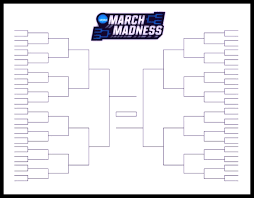
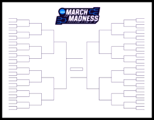
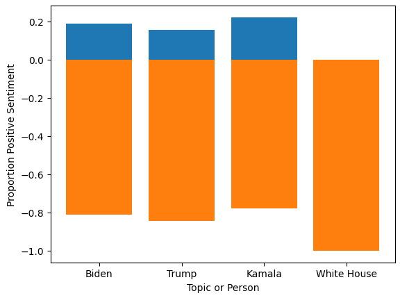

December 10, 2002
Originally from Tega Cay, South Carolina, I'm now a senior at the United States Military Academy,
majoring in Applied Statistics and Data Science with a Cyber Security Engineering track. In addition to my academic pursuits,
I'm an active member of the boxing team and have been selected to branch into the Engineers in the Army.
On this website, you can explore the various projects I'm working on. If you have any questions or would like to know more,
please feel free to contact me.
 

TThis project compares Bayesian and frequentist logistic regression models for predicting NCAA March Madness upsets.
Models use differences in team stats and seed to estimate the probability of a lower-seeded team winning. Performance is evaluated using accuracy and probabilistic scoring metrics.
This document explores various mathematical theorems and their proofs,
providing detailed explanations and step-by-step solutions.
In this project, my partners and I utilized DistilBERT, a transformer model, to build a question-answering system.
By leveraging the transformers library, we implemented a pipeline to generate answers to questions based on provided text.
We then compared these predicted answers to the correct ones using techniques like cosine similarity, which allowed us to
measure the accuracy and relevance of the model's responses.
This approach combined advanced NLP techniques with robust evaluation metrics to enhance the performance of our question-answering system.
In this project, my partners and I used TensorFlow and Keras to build a neural network that predicts the star rating of reviews based on their text.
By leveraging NLP techniques with nltk and spacy, and experimenting with different recurrent layers like LSTM and GRU,
we aimed to accurately classify the sentiment of each review.

In this project, my partners and I utilized Python to analyze the sentiment of tweets related to "Trump," "Kamala," "Biden," and the "White House."
We employed the VADER (Valence Aware Dictionary and sEntiment Reasoner) sentiment analysis tool and the Transformers library to process a dataframe of tweets.
Our goal was to extract and understand the underlying sentiments expressed in these tweets, providing insights into public opinion on these key political figures and institutions.